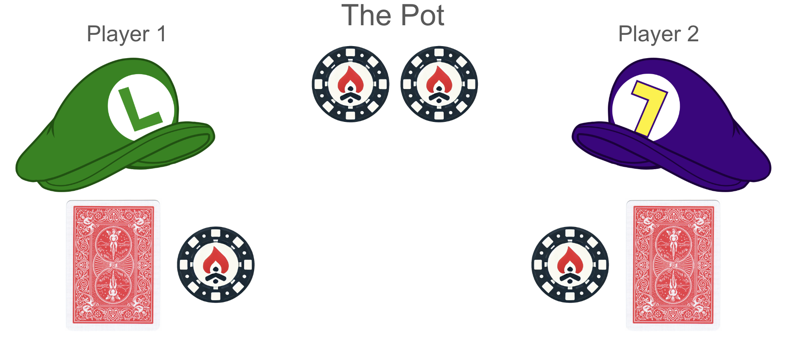

Kuhn Poker (1): Challenge
UNDER CONSTRUCTION!
Kuhn Poker
Kuhn Poker is the most simple version of poker. Here is the setup:
- 3 card deck: Queen, King, Ace (in ascending order, so Ace is highest)
2 players
Each player starts with 2 chips and antes 1 chip
Deal 1 card to each player (discard the third)

There is one betting round in which players can take these actions:
Up ↑ (putting a chip into the pot)
Down ↓ (not putting a chip into the pot)
Example betting round:
Player 1: Up ↑ (1 chip into pot)
Player 2: Up ↑ (1 chip into pot)
High Card wins +2 (+1 from the ante, +1 from the ↑ bet)
If P1 has card A and P2 has card K, P1 wins
List of all possible betting sequences:
| Player 1 | Player 2 | Player 1 | Winner |
|---|---|---|---|
| Up ↑ | Down ↓ | Player 1 (+1) | |
| Up ↑ | Up ↑ | High Card Player (+2) | |
| Down ↓ | Down ↓ | High Card Player (+1) | |
| Down ↓ | Up ↑ | Down ↓ | Player 2 (+1) |
| Down ↓ | Up ↑ | Up ↑ | High Card Player (+2) |
Get Started with Kuhn
Play a few hands
Get used to the game setup
Think about which situations are automatic and which are not
Interactive Site
We’ll represent Kuhn poker in terms of a visual game tree. This will become infeasible for more-complicated games, but here it will let us visualize what is going on.
First, deal a card to and to . Each possible deal of the cards forms a separate game node; for example, AK means that has A and has K:
will act first. He knows what his card is, but not what card has, so he can be in one of three infosets. We’ll name them A_, K_, and Q_ based on what card he holds:
At each infoset, can choose ↑Up or ↓Down…
…which will each take us to a distinct game node, based on a unique set of cards and action history:
Next, will act. He can observe his card and ’s first action, but not ’s card. We’ll name ’s six infosets with names like _K↓ and _Q↑ after his card and ’s first action:
At each of these infosets, can choose ↑Up or ↓Down:
If the actions were ↓↑, then will have to act again. Otherwise, the game is now over (with a payoff determined by the cards and the action sequence). We’ll write the payoffs from ’s perspective, and remember that ’s payoffs will be the inverse.
If still has to act, he’ll be in one of just three infosets, A_↓↑, K_↓↑, or Q_↓↑:
…and can choose ↑Up or ↓Down…
…but whatever he chooses, the game will end after that move:
Each player’s strategy can be completely described in terms of their action probabilities at each infoset—six of them total. For example, let’s consider ’s decision at the infoset K_↓↑:
When is at K_↓↑, he doesn’t know whether the true state of the world is KA_↓↑ or KQ_↓↑. Whatever action (or randomized mix of actions) his strategy says to make, he will be doing so in all of situations where he arrives at K_↓↑, without the ability to do different things for the different underlying states. If both players play randomly (50% ↑Up on each action), then will arrive at K_↓↑ via KA↓↑ equally often as via KQ↓↑. In this case, his expected payoff for playing ↑Up is a 50%-50% weighted sum of the payoffs KA↓↑↑ (-2) and KQ↓↑↑ (+2), for an expected value of 0. Similarly, his expected payoff for ↓Down is a 50%-50% weighted sum of the payoffs for KA↓↑↓ and KQ↓↑↓, though in this case they’re both -1 and the EV doesn’t depend on the composition weights of the infoset. With these expected values, ’s “best response” at this infoset (holding everything else about both strategies constant) is to play ↑Up 100% of the time. Exercise: How much should ’s expected value from the whole game (a random deal) to increase if he moves from playing ↑Up at K_↓↑ 50% of the time to 100% instead? Once you’ve figured out what you expect the answer to be, set the strategy probability to 100% in the text box above and check your answer. But what if the probabilities of reaching K_↓↑ via KA↓↑ versus KQ↓↑ aren’t equal? If the players don’t play 50-50 randomly, then we’ll have to calculate the probability of reaching KA↓↑ (including the probability of the initial KA deal) and the probability of reaching KQ↓↑ (likewise), and let the composition of the infoset be proportional to the reach-state probabilities. [note: in larger games, we might approximate these reach-state probabilities by sampling games with simulated play instead of calculating them analytically] We can see this in our next example. Consider ’s actions at _Q↓. When played K_↓↑ randomly, would get a payoff of -1.0 (+1.0) for playing ↓Down and -0.5 (+0.5) for playing ↑Up. ’s Q is always has the worst hand, but if plays ↓Down [the poker term would be that he “folds”] often enough, then will win +1s often enough to come out ahead regardless. But if always plays ↑Up at K_↓↑, then ’s payoff for playing ↑Up at _Q↓ becomes -1.25 (+1.25), worse than playing ↓Down, and so he should play ↓Down instead of ↑Up.
::: {.duplicate_K_↓↑ style=“display:inline-block”} :::
::: {.duplicate__Q↓ style=“display:inline-block”} :::
Exercise: Set the K_↓↑ strategy prob to ’s local best response. Set the _Q↓ strategy prob to ’s local best response. Observe that ’s best-response has changed again. Try to set the strategies to a pair of values such that neither player has regret. Now we get to the core difference between solving complete-information games and incomplete-information games. In our game of Kuhn poker, when switches to only playing ↓Down at _Q↓, ’s payoff EVs at K_↓↑ change—because now that infoset is only composed of KA↓↑ and no KQ↓↑. With the resulting EVs, has a payoff of -2 for playing ↑Up, and should play ↓Down instead. In a complete-information game, we can solve the game inductively by passing up the tree from the end-states and solving each situation in terms of known solutions to its successor nodes. Whatever the best thing to do at the downtree node was, it’s still the best thing to do, no matter how you get there. But in an imperfect-information game, changing an uptree strategy parameter can change the “right solution” is at downtree infosets—so we can’t solve a game in a single pass from the endgames to the beginning. Nearly every game-solving technique for imperfect-information games, then, is based on iteratively improving on a pair of strategies (one for each player) based on local improvements until it hopefully resolves into something good. Exercise: Now try to find a pair of regret-free full strategies for and . When you get each infoset to at most 0.1 chips of EV away from regret-free, a link to the next stage will appear here:
Visit the interactive Kuhn site. The site shows the game tree for Kuhn Poker at the top and the 12 information sets of the game at the bottom.
Interactive Site Kuhn Tree
Recall that an information set is a set of nodes that contain the same information for the corresponding player. For example, a P1 K_ node indicates that P1 has card K and no other actions have occurred (if actions had occurred they would be shown in the infoset as ↑ or ↓).
This information set represents both the node where P1 has K and P2 has A and the node where P1 has K and P2 has Q, but since P1 cannot distinguish between these, they are grouped into one information set.
TODO: Screenshots and explain
Interactive Site Node Strategies
TODO: Screenshots and explain
Play
Spend a few minutes playing with the strategy probabilities to see how they affect the rest of the tree.
Recall the two types of uncertainty:
About which node we are actually in, which depends on probabilities upwards in the game tree
About what happens after an action, which depends on the probabilities downwards in the game tree
Challenge 1
The goal of this challenge is to find optimal strategies for Kuhn Poker by adjusting the individual strategies at each of the 12 infosets (6 for each player). Optimal here means Nash equilibrium regret-minimizing strategies for both players.
By adjusting strategies for both players, we can find an equilibrium and then
Part 1: Submit Manual Strategies
Set the 12 strategies to percentages that you think are best.
Hint: There are some “automatic” infoset strategies such that it only makes sense to play 100% of one action in the game.
TODO: Time limit? Do this in session and other outside?
Part 2: Submit Automatic Strategies
After submitting the manual strategies, you will move to the automatic page in which you can update the strategies by selecting different algorithmic methods, iterations, and speeds.
Why can’t we just do tree search?
Because of incomplete information.
If we had complete information, then the regret-minimizing strategy downstream of a node would depend only on stuff downtree of that node, and we could – in theory – compute the strategy recursively from the bottom up.
If you attempt to follow this strategy in Kuhn poker, it will fail. You can try this for yourself – if it was valid to “solve from the bottom up”, then the following steps should get to a regret-minimal strategy:
- Reset
- Update the strategy weights for the X_↓↑ nodes until they converge.
- Update the strategy weights for the _X↓ and _X↑ nodes until they converge.
- Update the strategy weights for the X_ nodes until they converge.
Follow these steps. You do not have a regret-minimal strategy. Why not? What went wrong?
Do we really need mixed strategies?
You can test this for yourself. If you set the learning rate to 1.0, updating a cell will move it all the way to playing the locally better action 100% of the time.
Follow these steps:
- Reset
- Set the learning rate to 1.0.
- In any order you like, pick cells and update them.
- Repeat 3 while there are still suboptimal moves in your strategy.
A bad thing is happening to you. Why?
Find Strategies
Update the strategies until they converge and submit the strategy.
Challenge 1 Results
Parts 1 and 2 will each generate and submit a bot that plays with your chosen probabilities. (It has no memory of other rounds, and plays each round based on the probabilities.)
Your submission will play 100,000 times against all other submissions (including 10 bots that we added to start the challenge). It will play as P1 half the time and P2 half the time. Each 1v1 will be played in duplicate so that the card dealings are reversed to reduce variance.
After a short delay, the leaderboard should update; your score will be compared to other players and selected bots. You will be listed as “tied” with another entry if your total score against all opponents is within one standard error of theirs.